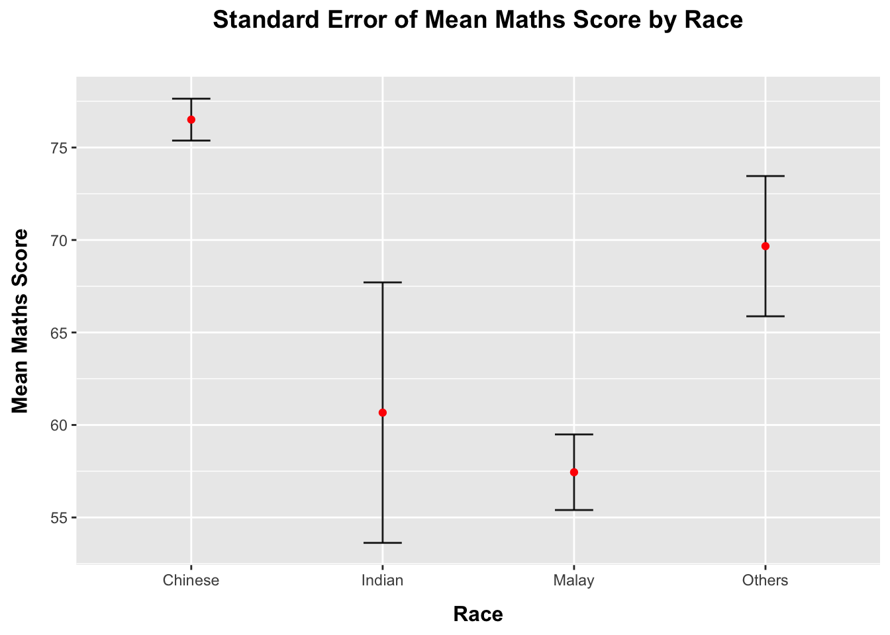
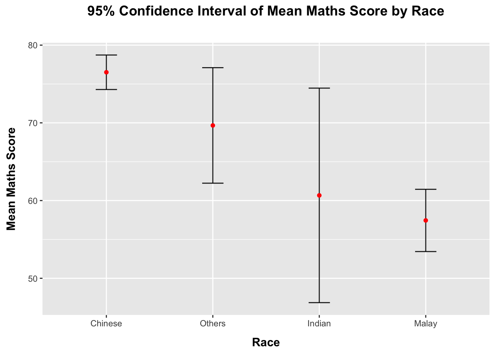
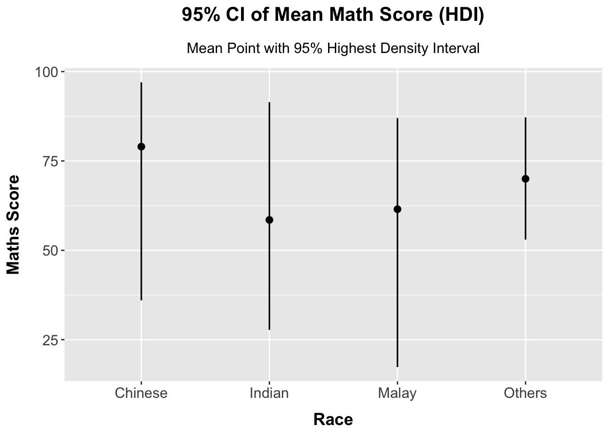
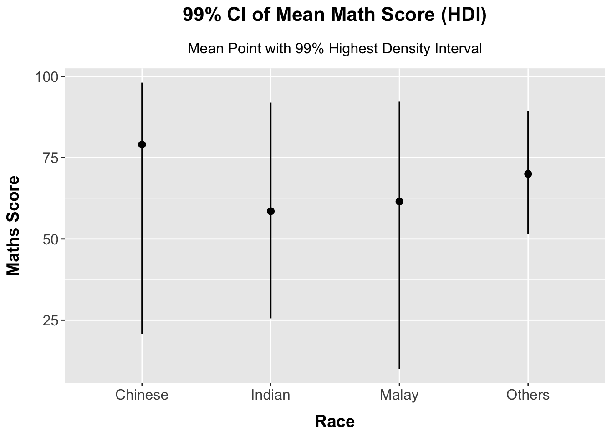
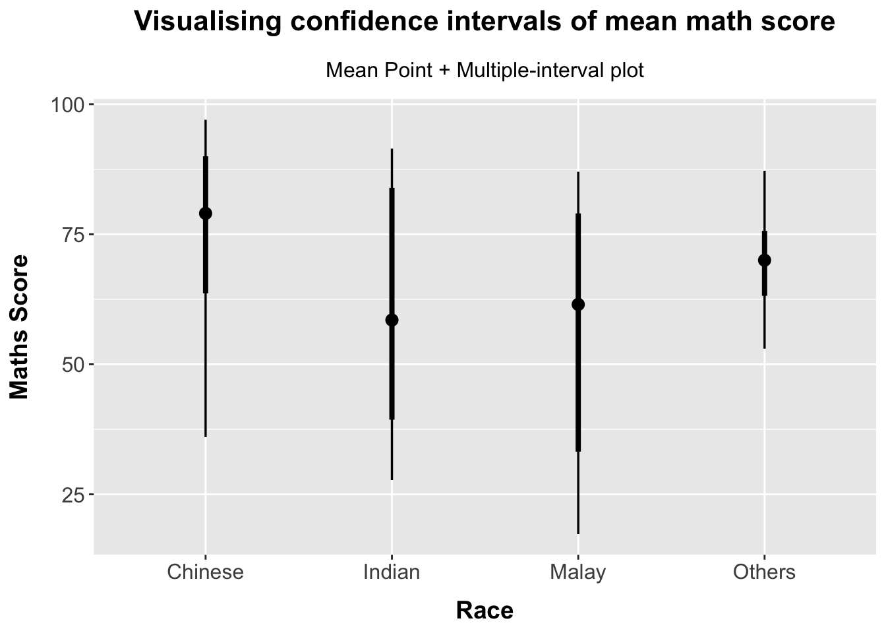
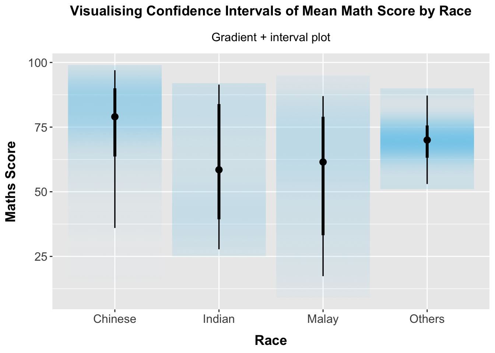
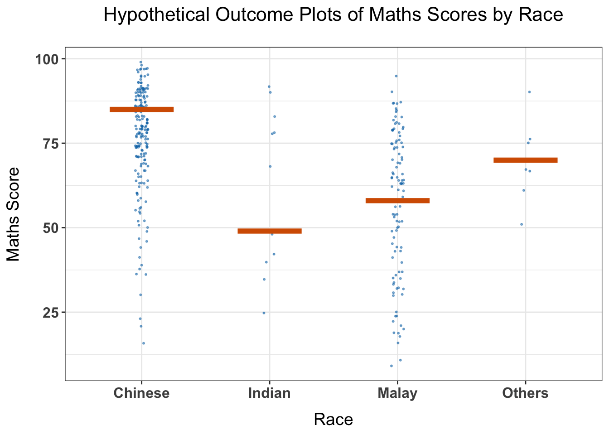

Code
pacman::p_load(plotly, crosstalk, DT,
ggdist, ggridges, colorspace,
gganimate, tidyverse)Visualising Uncertainty
Vizualising uncertainty is relatively new in statistical graphics. In this chapter, you will gain hands-on experience on creating statistical graphics for vizualising uncertainty. By the end of this chapter you will be able:
to plot statistics error bars by using ggplot2,
to plot interactive error bars by combining ggplot2, plotly and DT,
to create advanced by using ggdist, and
to create hypothetical outcome plots (HOPs) by using ungeviz package.
For the purpose of this exercise, the following R packages will be used, they are:
tidyverse, a family of R packages for data science process,
plotly for creating interactive plot,
gganimate for creating animation plot,
DT for displaying interactive html table,
crosstalk for for implementing cross-widget interactions (currently, linked brushing and filtering), and
ggdist for visualising distribution and uncertainty.
pacman::p_load(plotly, crosstalk, DT,
ggdist, ggridges, colorspace,
gganimate, tidyverse)In this exercise we will use Exam_data.csv
exam <- read_csv("~/Documents/SMU/April Term 2/Visual Analytics/patriciatrisno/ISSS608-VAA/Hands-on_Ex/Hands-on_Ex04/data/Exam_data.csv")A point estimate is a single number, such as a mean. Uncertainty, on the other hand, is expressed as standard error, confidence interval, or credible interval.
Don’t confuse the uncertainty of a point estimate with the variation in the sample
Check Part 6 to learn more about visualizing uncertainty
In this section, we will plot error bars of maths scores by race by using data provided in exam tibble data frame.
Firstly, code chunk below will be used to derive the necessary summary statistics.
my_sum <- exam %>%
group_by(RACE) %>%
summarise(
n=n(),
mean=mean(MATHS),
sd=sd(MATHS)
) %>%
mutate(se=sd/sqrt(n-1))group_by() of dplyr package is used to group the observation by RACE,summarise() is used to compute the count of observations, mean, standard deviationmutate() is used to derive standard error of Maths by RACE, andWhile for the purpose of visual representation and easy interpretation of the data, we will use the code chunk below to display the my_sum tibble data frame in an HTML table format.
| RACE | n | mean | sd | se |
|---|---|---|---|---|
| Chinese | 193 | 76.50777 | 15.69040 | 1.132357 |
| Indian | 12 | 60.66667 | 23.35237 | 7.041005 |
| Malay | 108 | 57.44444 | 21.13478 | 2.043177 |
| Others | 9 | 69.66667 | 10.72381 | 3.791438 |
knitr::kable(head(my_sum), format = 'html')
Now we are ready to plot the standard error bars of mean maths score by race as shown below.

ggplot(my_sum) +
geom_errorbar(
aes(x=RACE,
ymin=mean-se,
ymax=mean+se),
width=0.2,
colour="black",
alpha=0.9,
linewidth=0.5) +
geom_point(aes
(x=RACE,
y=mean),
stat="identity",
color="red",
size = 1.5,
alpha=1) +
ggtitle("Standard Error of Mean Maths Score by Race")+
labs(x = "Race", y = "Mean Maths Score") +
scale_y_continuous(breaks = seq(floor(min(my_sum$mean - my_sum$se) / 5) * 5,
ceiling(max(my_sum$mean + my_sum$se) / 5) * 5, by = 5)) +
theme(
plot.title = element_text(hjust = 0.5, size = 14, face = "bold", margin = margin(b = 25)),
axis.title.x = element_text(size = 12, face = "bold", hjust = 0.5, margin = margin(t = 10)),
axis.title.y = element_text(size = 12, face = "bold", hjust = 0.5, vjust = 0.5, margin = margin(r = 12))
)geom_point(), it is important to indicate stat=“identity”.Instead of plotting the standard error bar of point estimates, we can also plot the confidence intervals of mean maths score by race.

ggplot(my_sum) +
geom_errorbar(
aes(x = reorder(RACE, -mean),
ymin = mean - 1.96 * se,
ymax = mean + 1.96 * se),
width = 0.2,
colour = "black",
alpha = 0.9,
linewidth = 0.5
) +
geom_point(aes(
x = RACE,
y = mean
),
stat = "identity",
color = "red",
size = 1.5,
alpha = 1) +
labs(x = "Race",
y = "Mean Maths Score",
title = "95% Confidence Interval of Mean Maths Score by Race") +
theme(
plot.title = element_text(hjust = 0.5, size = 14, face = "bold", margin = margin(b = 25)),
axis.title.x = element_text(size = 12, face = "bold", hjust = 0.5, margin = margin(t = 10)),
axis.title.y = element_text(size = 12, face = "bold", hjust = 0.5, vjust = 0.5, margin = margin(r = 12))
)labs() argument of ggplot2 is used to change the x-axis label.In this section, you will learn how to plot interactive error bars for the 99% confidence interval of mean maths score by race as shown in the figure below.

In the code chunk below, stat_pointinterval() of ggdist is used to build a visual for displaying distribution of maths scores by race.
exam %>% ggplot(aes(x = RACE,y = MATHS)) +
stat_pointinterval() +
labs(
title = "Visualising Confidence Intervals of Mean Math Score",
subtitle = "Mean Point with Multiple Intervals",
x = "Race",
y = "Maths Score" )+
theme(
plot.title = element_text(hjust = 0.5, size = 16, face = "bold", margin = margin(b = 15)),
plot.subtitle = element_text(hjust = 0.5, size = 12, margin = margin(b = 10)),
axis.title.x = element_text(size = 14, face = "bold", hjust = 0.5, margin = margin(t = 10)),
axis.title.y = element_text(size = 14, face = "bold", vjust = 1, margin = margin(r = 10)),
axis.text.x = element_text(size = 12),
axis.text.y = element_text(size = 12)
)This function comes with many arguments:
.width = controls the width of the confidence/credible interval that is displayed.
.point = determines the point estimate that is displayed within the interval.
.interval = specifies the type of interval to be displayed. qi stands for quantile interval.
For example, in the code chunk below the following arguments are used:

exam %>%
ggplot(aes(x = RACE, y = MATHS)) +
stat_pointinterval(.width = 0.95,
.point = median,
.interval = qi) +
labs(
title = "Visualising confidence intervals of median math score",
subtitle = "Median Point + Multiple-interval plot",
x = "Race",
y = "Maths Score" )+
theme(
plot.title = element_text(hjust = 0.5, size = 16, face = "bold", margin = margin(b = 15)),
plot.subtitle = element_text(hjust = 0.5, size = 12, margin = margin(b = 10)),
axis.title.x = element_text(size = 14, face = "bold", hjust = 0.5, margin = margin(t = 10)),
axis.title.y = element_text(size = 14, face = "bold", vjust = 1, margin = margin(r = 10)),
axis.text.x = element_text(size = 12),
axis.text.y = element_text(size = 12)
)
When the distribution within each race group relatively symmetric and no extreme outliers, it is hard to spot the different in the plot.
# Using .point = mean and .interval = hdi for 95% Highest Density Interval
exam %>%
ggplot(aes(x = RACE, y = MATHS)) +
stat_pointinterval(.width = 0.95,
.point = mean,
.interval = hdi,
show.legend = FALSE,
point_size = 2,
interval_size = 1) +
labs(
title = "95% CI of Mean Math Score (HDI)",
subtitle = "Mean Point with 95% Highest Density Interval",
x = "Race",
y = "Maths Score"
) +
theme(
plot.title = element_text(hjust = 0.5, size = 16, face = "bold", margin = margin(b = 15)),
plot.subtitle = element_text(hjust = 0.5, size = 12, margin = margin(b = 10)),
axis.title.x = element_text(size = 14, face = "bold", hjust = 0.5, margin = margin(t = 10)),
axis.title.y = element_text(size = 14, face = "bold", vjust = 1, margin = margin(r = 10)),
axis.text.x = element_text(size = 12),
axis.text.y = element_text(size = 12)
)
# Using .point = mean and .interval = hdi for 99% Highest Density Interval
exam %>%
ggplot(aes(x = RACE, y = MATHS)) +
stat_pointinterval(.width = 0.99,
.point = mean,
.interval = hdi,
show.legend = FALSE,
point_size = 2,
interval_size = 1) +
labs(
title = "99% CI of Mean Math Score (HDI)",
subtitle = "Mean Point with 99% Highest Density Interval",
x = "Race",
y = "Maths Score"
) +
theme(
plot.title = element_text(hjust = 0.5, size = 16, face = "bold", margin = margin(b = 15)),
plot.subtitle = element_text(hjust = 0.5, size = 12, margin = margin(b = 10)),
axis.title.x = element_text(size = 14, face = "bold", hjust = 0.5, margin = margin(t = 10)),
axis.title.y = element_text(size = 14, face = "bold", vjust = 1, margin = margin(r = 10)),
axis.text.x = element_text(size = 12),
axis.text.y = element_text(size = 12)
)Note: Use the code below for reference
exam %>%
ggplot(aes(x = RACE,
y = MATHS)) +
stat_pointinterval(
show.legend = FALSE) +
labs(
title = "Visualising confidence intervals of mean math score",
subtitle = "Mean Point + Multiple-interval plot",
x = "Race",
y = "Maths Score" )+
theme(
plot.title = element_text(hjust = 0.5, size = 16, face = "bold", margin = margin(b = 15)),
plot.subtitle = element_text(hjust = 0.5, size = 12, margin = margin(b = 10)),
axis.title.x = element_text(size = 14, face = "bold", hjust = 0.5, margin = margin(t = 10)),
axis.title.y = element_text(size = 14, face = "bold", vjust = 1, margin = margin(r = 10)),
axis.text.x = element_text(size = 12),
axis.text.y = element_text(size = 12)
)
As mentioned that this function comes with many arguments, students are advised to read the syntax reference for more detail.
In the code chunk below, stat_gradientinterval() of ggdist is used to build a visual for displaying distribution of maths scores by race.
exam %>%
ggplot(aes(x = RACE,
y = MATHS)) +
stat_gradientinterval(
fill = "skyblue",
show.legend = FALSE
) +
labs(
title = "Visualising Confidence Intervals of Mean Math Score by Race",
subtitle = "Gradient + interval plot",
x = "Race",
y = "Maths Score" )+
theme(
plot.title = element_text(hjust = 0.5, size = 14, face = "bold", margin = margin(b = 15)),
plot.subtitle = element_text(hjust = 0.5, size = 12, margin = margin(b = 10)),
axis.title.x = element_text(size = 14, face = "bold", hjust = 0.5, margin = margin(t = 10)),
axis.title.y = element_text(size = 14, face = "bold", vjust = 1, margin = margin(r = 10)),
axis.text.x = element_text(size = 12),
axis.text.y = element_text(size = 12)
)
devtools::install_github("wilkelab/ungeviz")Note: You only need to perform this step once.
library(ungeviz)Next, the code chunk below will be used to build the HOPs.
ggplot(data = exam,
(aes(x = factor(RACE),
y = MATHS))) +
geom_point(position = position_jitter(
height = 0.3,
width = 0.05),
size = 0.4,
color = "#0072B2",
alpha = 1/2) +
geom_hpline(data = sampler(25,
group = RACE),
height = 0.6,
color = "#D55E00") +
labs(
title = "Hypothetical Outcome Plots of Maths Scores by Race",
x = "Race",
y = "Maths Score"
) +
theme_bw() +
theme(
plot.title = element_text(hjust = 0.5, size = 16, face = "bold", margin = margin(b = 15)),
axis.title.x = element_text(size = 14, face = "bold", hjust = 0.5, margin = margin(t = 10)),
axis.title.y = element_text(size = 14, face = "bold", vjust = 1, margin = margin(r = 10)),
axis.text.x = element_text(size = 12, face = "bold"),
axis.text.y = element_text(size = 12, face = "bold"),
panel.spacing = unit(1, "lines")
) +
transition_states(.draw, 1, 3)
When we look at numbers and charts that try to predict things, like how well students might score or who might win an election, it’s important to remember that these are just our best guesses. There’s always a chance things could turn out a bit differently. This “wiggle room” or possibility of other outcomes is what we call uncertainty.
Other example, when we flipping a coin. We predict a 50/50 chance for heads or tails, but every flip is its own event, and sometimes you might get heads three times in a row just by chance. That doesn’t mean our 50/50 prediction was wrong, just that something unlikely happened.
” If something unlikely happens, it doesn’t automatically mean our prediction was wrong; it just means that something unusual occurred. “
So, how do we show this “wiggle room” in our charts? One way is using error bars. These little lines sticking out from our main point show a range of scores or results that are reasonably likely. Another way is to use gradient plots, where shaded areas show us a general idea of where the real number might be. Darker areas mean those outcomes are more likely, while lighter areas mean they are less likely.
It’s crucial to show this uncertainty because it gives a more honest picture. Just giving one number can be misleading and make us think we know exactly what will happen, which is rarely the case! By showing the range of possibilities, we get a better sense of what could happen and can make smarter decisions